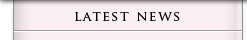
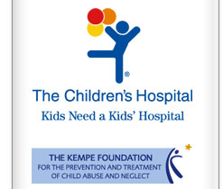
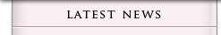
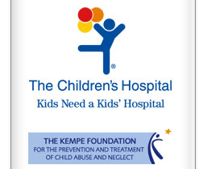

|  | |||
|
|||
|  | |||
|  | |||
|
|||
|  | |||
|
Here you will find media resources on our campaign which kicked off Monday April 10, 2006. We believe that in order to dramatically impact this issue and reduce the problem, education and awareness is key. Child abuse can be prevented and this program is an important step in taking action. We would be happy to respond to inquiries, provide you with additional information and quality graphics. Please contact: The Children's Hospital: Natalie Goldstein, Media Relations: 303-861-3970 Goldstein.Natalie@tchden.org Kempe: Lindsey Zimmerman, Communications: 303-864-5306 Zimmerman.Lindsey@Kempe.org Rocky Mountain PBS To order your copy visit: The Shaken Baby Center Public Service Announcements:
Television Annoucements: 30 second spot - Click to View
Radio Annoucements: 2007
Jessica – click to hear
Radio Annoucements: 2006 Radio Rally – click to hear our radio rally that aired simultaneously on Colorado radio stations April 12 at noon as a sign of support for prevention! 30second – click to hear
Media materials “Denver Area Radio Stations Halt Programming to Rally Against Shaken Baby Syndrome” (4-10-06) - View PDF The Kempe Child Protection Team - program fact sheet SBS Prevention Brochure - useful resource for parents and caregivers
SBS News
“Couple Educates About Dangers of Shaking Babies ” cbs4denver.com - August 28, 2006
“Patience can help during Shaken Baby Syndrome ” KUSA Channel 9 - August 28, 2006
“Shaken-baby Syndrome Preventable, Experts Say ” LongmontFYI.com - May 15, 2006
"Radio Spot Hopes To Prevent Shaken Baby Syndrome" CBS4Denver.com - April 13, 2006
9News at Noon - April 12, 2006
"Denver Radio Gets out Word on Shaken Baby Syndrome" Denver Post - April 11, 2006
"Shaken Baby Syndrome Radio Campaign" 7News - April 10, 2006
|
|